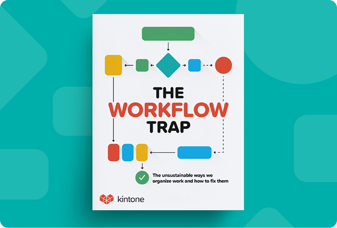

Kintone for project managers
Project management that actually fits how your team works
Most tools force you into a set way of working. Kintone lets you build a system that matches how your team plans, tracks, and runs projects with AI to help you move faster.
Book DemoTrusted by 42,000+ teams that need more than a basic PM tool

Kintone gave us a system that actually matches how we work. We replaced multiple tools and finally have full visibility across our projects.
Mary Dee , Brand and Learning Content Manager for Volvo
See how teams run projects with Kintone

Kintone for project managers
Fix the way your team manages work
Get The Workflow Trap to see why workflows break and how to make them work better.
Download NowFrequently Asked Questions
Kintone is built for teams that need more flexibility and customization. Instead of fitting into a predefined structure, you can build workflows that match your exact processes.
Kintone is built for teams that need more flexibility and customization. Instead of fitting into a predefined structure, you can build workflows that match your exact processes.
Kintone is built for teams that need more flexibility and customization. Instead of fitting into a predefined structure, you can build workflows that match your exact processes.
Kintone is built for teams that need more flexibility and customization. Instead of fitting into a predefined structure, you can build workflows that match your exact processes.